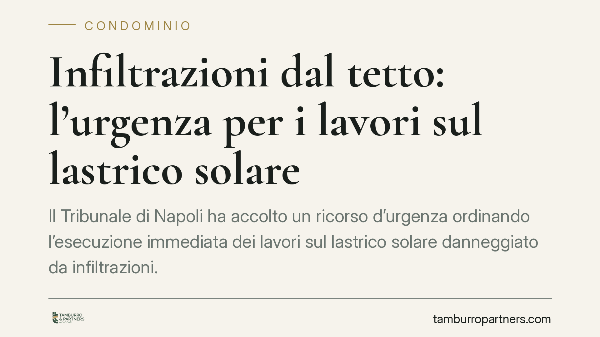

Infiltrazioni dal tetto: l'urgenza per i lavori sul lastrico solare
Il Tribunale di Napoli ha accolto un ricorso d'urgenza ordinando l'esecuzione immediata dei lavori sul lastrico solare danneggiato da infiltrazioni. Il giudice ha dato peso al rischio per la salute legato a muffa e umidità, non solo al danno economico. Una decisione che offre al condomino uno strumento rapido quando il condominio resta inerte.

Il caso
Un condomino lamentava infiltrazioni provenienti dal tetto comune, con formazione di muffa e umidità nel proprio appartamento. L'assemblea aveva già deliberato gli interventi, ma i lavori non erano mai partiti. Di fronte all'inerzia, il condomino si è rivolto al Tribunale di Napoli, ottava sezione civile, con un ricorso cautelare per ottenere l'esecuzione immediata delle opere.
Il giudice ha accolto la domanda. Il dato interessante è la motivazione: a pesare non è stato il danno patrimoniale al bene, ma il pericolo per la salute derivante dall'esposizione prolungata a muffa e umidità in un ambiente abitato.
Inquadramento normativo
Lo strumento utilizzato è il ricorso ex art. 700 c.p.c., il cosiddetto provvedimento d'urgenza. Si tratta di una misura cautelare "atipica": può essere richiesta quando non esistono rimedi specifici e sussistono due presupposti. Il primo è il *fumus boni iuris*, cioè la probabile fondatezza del diritto che si vuole tutelare. Il secondo è il *periculum in mora*, ossia il rischio che l'attesa dei tempi ordinari del processo produca un pregiudizio grave e irreparabile.
Nel caso del lastrico solare, la manutenzione delle parti comuni grava sul condominio ai sensi dell'art. 1117 e seguenti del codice civile. Quando il lastrico serve anche da copertura, l'onere di riparazione è disciplinato dall'art. 1126 c.c., che ripartisce le spese tra chi ne ha l'uso esclusivo e gli altri condomini.
Il punto decisivo della pronuncia napoletana riguarda il *periculum*. Secondo un orientamento consolidato, il danno meramente patrimoniale di regola non giustifica l'urgenza, perché è risarcibile per equivalente. Il discorso cambia quando entra in gioco la salute: muffa e umidità in un'abitazione non sono un semplice deterioramento economico, ma un rischio per il benessere delle persone che vi vivono. Questo trasforma il pregiudizio in "irreparabile" e apre la strada alla tutela cautelare.
Implicazioni pratiche
La decisione segna un passaggio utile per chi subisce infiltrazioni e si scontra con la lentezza condominiale. Due aspetti meritano attenzione.
Il primo: l'esistenza di una delibera assembleare che approva i lavori non esclude l'urgenza. Anzi, la mancata esecuzione di una delibera già adottata rafforza la posizione del condomino, perché dimostra l'inerzia dell'amministrazione rispetto a un intervento già riconosciuto come necessario.
Il secondo: la distinzione tra danno economico e danno alla salute diventa la leva per ottenere una risposta rapida. Chi lamenta solo macchie o cadute di intonaco difficilmente otterrà un provvedimento d'urgenza. Chi documenta la presenza di muffa, con i connessi rischi per le vie respiratorie, ha argomenti più solidi.
Resta una decisione di merito, non una norma di portata generale. Altri tribunali potrebbero valutare diversamente il singolo caso, che dipende sempre dalla prova concreta del pericolo.
Cosa fare in concreto
- Documentate il danno fin da subito. Raccogliete fotografie datate, eventuali relazioni tecniche e, se possibile, un accertamento sulla presenza di muffa e sui suoi effetti sull'ambiente abitativo.
- Formalizzate la segnalazione all'amministratore con raccomandata o PEC, chiedendo l'intervento e fissando un termine. L'inerzia documentata è un elemento centrale per l'urgenza.
- Verificate lo stato delle delibere. Se i lavori sono già stati approvati ma non avviati, conservate il verbale assembleare: dimostra che la necessità dell'intervento era riconosciuta.
- Valutate con un legale la via cautelare solo se emerge un pregiudizio grave e non risarcibile per equivalente, come il rischio per la salute. In assenza di questo presupposto il ricorso difficilmente verrà accolto.
- Conservate ricevute e corrispondenza relative a eventuali spese sostenute per limitare i danni, utili ai fini di una successiva richiesta risarcitoria.
Consigliamo di non attendere l'aggravarsi delle infiltrazioni: più il quadro probatorio è tempestivo e completo, più efficace sarà qualsiasi iniziativa, giudiziale o stragiudiziale.
---
Contributo informativo a cura di Tamburro & Partners - Avv. Giuseppe Tamburro. Non costituisce parere legale.
Ogni condominio ha una storia a sé.
Se gestisci un'amministrazione e vuoi un confronto su una specifica questione condominiale, scrivi allo studio. Ti rispondiamo entro un giorno lavorativo.